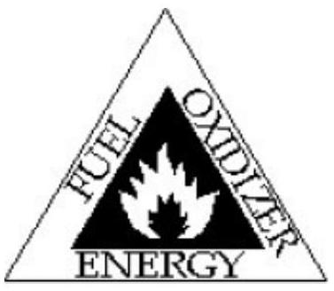

Hazardous Area Classification & Protection
THE FIRE TRIANGLE

The fire triangle is a tool to illustrate the three elements which must be present to have a fire or explosion: fuel, oxidizer, and energy. Fuel and oxidizer must be present in a concentration appropriate to form a combustible mixture. The ignition source must supply enough energy to initiate combustion. If any one of the elements of the triangle is not present in sufficient amount, then combustion cannot occur.
ELECTRICITY DISTRIBUTION WITHIN THE EXPLOSIVE AREAS
- The electrical distribution in an explosives area may be by means of underground cables or overhead lines. Underground cables are preferred and should be provided wherever practicable. Cables shall not be laid below buildings.
- Overhead lines shall be sited at greater than ${--}^{s}$ where the physical safe distance (D) is calculated by reference to the height (H) of the supporting structure (or the height of the highest conductor if greater) and the length of the span (S). The greater distance derived from either of the following expressions should be observed.
- conductors and earth and between live and neutral conductors at the junctions of overhead lines and underground cables.
- Surge protective devices shall be fitted between live
- Lighting columns, shall be sited so as to ensure that in the event of failure no live conductor is able to fall onto an explosives building. Supports shall be installed a minimum distance of 1.5 times their height away from the building.
- Where possible the explosives area electrical distribution overhead power lines, should not cross roads and railways. Where such crossings are unavoidable, precautions shall be taken to reduce to a minimum the length of time vehicles loaded with explosives stand below the power lines. Power line crossings of roads and railways should be clearly marked (e.g. by painting yellow box markings on roads).
- Spans of overhead power lines at road and rail crossings and immediately adjacent spans should be inspected regularly and the results recorded.
- Explosives establishments shall hold and maintain plans showing the position and size of all underground cables, including the location of all joints in cables, cable pits, etc. within the explosives areas.
CLASSIFICATION OF HAZARDOUS AREA
Classified in 03 zones based upon the Frequency of the appearance and duration of an explosive gas atmosphere:
- Class I (Zone 0) - An area where an explosive atmosphere is present continuously or for long periods or frequently. Examples: Vapour space above closed process vessels; Storage tanks; Closed containers; Areas containing open tanks of volatile, flammable liquid
- Class II (Zone 1) - An area in which an explosive atmosphere is likely to occur in normal operation but, if it does occur, will persist for a short period only, i.e explosive atmosphere is likely to occur in normal operation occasionally.
- Flammable gas or vapour concentration is likely to exist in the air under normal operating conditions
- explosive environment is likely to occur frequently because of maintenance, repairs or leakage
- Piping system (containing valves, meters, or screwed or flanged fittings) should be in an inadequately ventilated area
- The area below the surrounding elevation or grade is such vapours may accumulate therein
- Failure of equipment is likely to cause an electrical system failure simultaneously
- Examples:
- Imperfectly fitting peripheral seals on floating roof tanks
- Inadequately ventilated pump rooms for flammable gas /liquid
- Oily waste water sewer / basins
- Loading / unloading gantries
- Interiors of Sample Retention Room
- Areas in the immediate vicinity of vents and filling hatches
- Class III (Zone 2) - explosive atmosphere is not likely to occur in normal operation but, if it does occur under abnormal operation, will persist for a short period only. Normally, the system handling flammable liquid /vapour is in an adequately ventilated area. Examples:
- Release of flammable liquid/gas in abnormal conditions such as accidental release of a gasket or packing
- The flammable vapours can be conducted to the location as through trenches, pipes or ducts
- Locations adjacent to Zone 1 areas
- Pressurized rooms where flammable gas / vapour can enter in the case of failure of positive mechanical ventilation
EXTENT OF HAZARD:
- Division 1: Hazardous media can exist under normal operating condition
- Division 2: Hazardous media can exist under abnormal operating condition
| CLASS | MATERIALS: | DIVISION 1 | DIVISION 2 |
|---|---|---|---|
|
I Gases, Vapors and Liquids |
A: Acetylene B: Hydrogen, etc. C: Ether, etc. D: Hydrocarbons, fuels, solvents, etc. |
Explosive or ignitable gases or vapors are present under normal operating conditions. | Explosive or ignitable gases or vapors are not normally present (but may accidentally exist). |
| II Dusts |
E: Metal dusts F: Carbon dusts G: Flour, grain, wood or chemical dusts |
Combustible dust is in the air under normal operating conditions. | Dust is not normally in the air in ignitable concentrations (but may accidentally exist). |
| III Fibers and Flyings | Textiles, wood chips, etc. (ignitable but not explosive) | Easily ignitable fibers or flyings are handled, manufactured or used. | Easily ignitable fibers are stored or handled. |
IMPORTANCE OF HAZARDOUS AREA CLASSIFICATION/ZONING
- Proper selection of electrical apparatus for installation
- Enable electrical apparatus to be operated safely
- Safety of personnel
- Hazard: Risk of presence of flammable gas and air mixture.
- -Hazardous atmosphere: An atmosphere/ environment containing any hazard in a concentration capable of ignition.
- -Hazardous area: is an area in which an explosive gas/dust/fibres atmosphere is present, or likely to be present, in quantities such as to require special precautions for the construction, installation and use of electrical apparatus
- -Ignition temperature: The lowest temp at which ignition occurs in vapour air mixture.
FLAMMABLE SUBSTANCES
Flammable substances may be gaseous, liquid or solid
- Flammable gas: Are often hydrocarbons & require very little energy to react with atmospheric oxygen. Examples: Methane, Ethane, Hydrogen
- Flammable Liquids: Which evaporates at room temperature in sufficient quantities to form flammable atmosphere. Examples: Lighter fuel (MS, Naphtha ....)
- Flammable Solids: Flammable Dust & fibers which react with atmospheric air to cause explosions in the presence of source of ignition. Ex: (Wood, Coal Dust, metals.....)
- -LEL Lower explosive limit: Lower or Minimum level of concentration of flammable vapour/gas in atmosphere which can ignite by arc/spark
- -HEL/UEL: Upper or maximum level of concentration of flammable vapour/gas in atmosphere which can ignite by arc/spark
- -Explosive/Flammability Range: Range between LEL to HEL
TYPE OF PROTECTIONS
Various method of protection is prevalent & is suitable for use in hazardous location depending on the extent of hazard. They are:
- Explosion proof or flame proof
- Increased safety
- Intrinsically safe
- Purge protected
- Non sparking
- Oil filled/immersion
- special installations
FLAME PROOF
Performance Requirements:
- It is a method of protection, where the equipment is enclosed in an enclosure, which will withstand the internal explosion of flammable gases that enter it, without damage and do not allow the internal explosion to permeate to the surroundings through any joints.
- Apparatus used will withstand an internal explosion of the inflammable gas which may enter it without causing damage and without communicating the internal inflammation to the external flammable gas. The escaping (hot) gases must sufficiently cool down along the escape path that by the time they reach the outside of the enclosure not to be a source of ignition of the outside, potentially ignitable surroundings.
- Lamps, circuits and sparking devices are contained within flameproof enclosure.
- Wiring enters enclosure via flameproof cable gland or flameproof barrier.
- Joints on covers or openings are protected by the 'flamepath'.
- Does not prevent explosion occurring but contains the explosion and prevents ignition of surrounding atmosphere.
Constructional Features:
- Flame path (length & clearances) is ensured as per code.
Suitability:
- For use in Zone-1 & Zone-2.
INCREASED SAFETY
Performance Requirements:
- Wherein additional precautions are taken to provide additional safety against excessive temperature, occurrence of arc & spark.
- These are not capable of withstanding explosion inside enclosure.
Constructional Features:
- No arcing devices such as fuse & switchgears are used.
- -Ignition is prevented by use of non sparking components.
- - Clearances & creep age distances are maintained as per code.
Suitability:
- For use in Zone-2.
INTRINSICALLY SAFE
Performance Requirements:
- A protection technique in which explosion is prevented by ensuring that sufficient energy for ignition of flammable gases is not available. It also ensure that the Surface temperature does not exceeds auto ignition temperature of surrounding flammable gases.
- The technique is based upon restriction of electrical energy within apparatus and in the interconnecting wiring, exposed to potentially explosive atmosphere, to a level below that which can cause ignition by either sparking or heating effects.
- Because of the method by which intrinsic safety is achieved it is necessary that not only the electrical apparatus exposed to the potentially explosive atmosphere but also other electrical apparatus with which it is interconnected is suitably constructed.
- The Surface temperature does not exceeds auto ignition temperature of surrounding flammable gases.
Constructional Features:
- These equipments are primarily low energy electronic device. Operates at lower voltage & amp. ($28 \mathrm{~V}, 93 \mathrm{~mA}, 0.65 \mathrm{~W}$)
Suitability:
PRESSURIZED/PURGE PROTECTED
Performance Requirements:
- Equipment is pressurized to a positive pressure relative to the surrounding atmosphere with air or an inert gas, thus the surrounding ignitable atmosphere cannot come in contact with energized parts of the apparatus. The overpressure is monitored, maintained and controlled.
- Explosion is prevented by purging flammable media & ensuring noningress of flammable media by keeping positive pressure.
- The Surface temperature does not exceeds auto ignition temperature of surrounding flammable gases.
Constructional Features:
- Components & devices are installed inside a purge panel. A positive pressure of uncontaminated air or other neutral gas is maintained inside the panel.
Suitability:
- For use in Zone-1.
NON SPARKING SAFE
Performance Requirements:
- It is a method of protection in which non arcing/non-sparking components are used such that in normal working condition, it is not capable of igniting the surrounding explosive atmosphere.
- Fault capable of causing the ignition is not likely to occur.
Constructional Features:
- -Components selected are non arcing, non sparking
- -Enclosed break-Incendive components.
- •Restricted breathing by sealing & gasketing.
Suitability:
- For use in Zone-2.
OIL IMMERSION
- A method of protection where electrical apparatus is made safe by oil immersion in the sense that flammable gasses or vapors above the oil or outside the enclosure will not be ignited
- An electrical equipment capable of igniting explosive gas mixture is protected by immersion in mineral oil or other suitable protective liquid so that explosive gas mixture cannot come in contact with electrical equipment i.e. oil/liquid acts as a barrier between them.
41 | P a g e